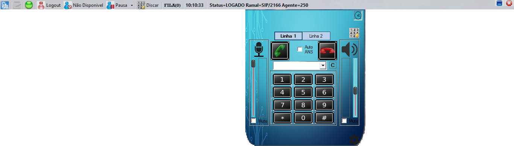

Instalação Callroute Desktop

Primeriros Passo
Acessar o link: http://totem.agecomnet.com.br:8080/callroute/desktop/setup.exe
Execultar o setup.exe

Clicar no instalar

Clicar no icone azul do lado esquerdo

Senha:
- Voip - Configurar Softphone
- 31994 - Configurar CallrouteDesktop
Configurar Callroute Desktop
Preencher as informaçoes

Preefixar o agente

Configurar Softphone
Preencher as informaçoes

Caso queria deixar o softphone visivel para realizar ligações

Configurar Avançadas
- Configurar Audio
- Configurar Codecs
- Opções de Media
Status
 Online e ativo
Online e ativo
 Não registrado informaçoes incoretas no softphone
Não registrado informaçoes incoretas no softphone
 Informaçoes do callroute desktop incoretas
Informaçoes do callroute desktop incoretas